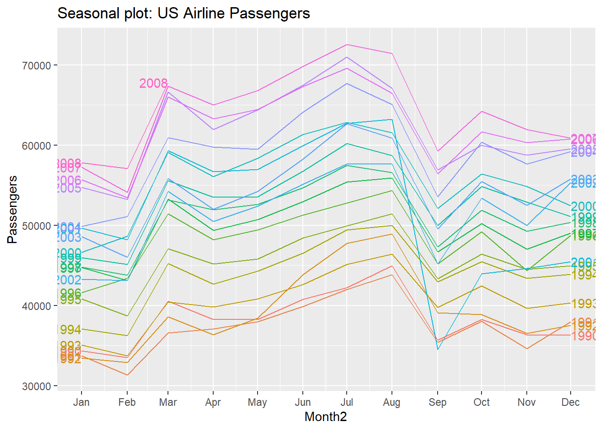

Chapter 2 Introduction
This document provides the code and output from Time Series I class. This is a living document and may be updated throughout the semester (when this occurs, you will be notified that it has been updated). First, here is a list of all the libraries that you will need:
library(tseries)
library(forecast)
library(haven)
library(fma)
library(expsmooth)
library(lmtest)
library(zoo)
library(seasonal)
library(ggplot2)
library(seasonalview)
library(aTSA)
library(imputeTS)
library(reticulate)
use_python("C:\\ProgramData\\Anaconda3\\python.exe")The data sets that you will need are as follows (be sure to put the correct location and file name for your computer):
file.dir = "https://raw.githubusercontent.com/sjsimmo2/TimeSeries/master/"
input.file1 = "usairlines.csv"
input.file2 = "steel.csv"
input.file3 = "leadyear.csv"
input.file4 = "ebay9899.csv"
input.file5 = "fpp_insurance.csv"
input.file6 = "ar2.csv"
input.file7 = "MA2.csv"
input.file8 = "hurrican.csv"
# Reads the data at specified directory
# If the file directory is incorrect, then this won't run
USAirlines = read.csv(paste(file.dir, input.file1,sep = ""))
Steel = read.csv(paste(file.dir, input.file2, sep = ""))
Lead.Year = read.csv(paste(file.dir, input.file3, sep = ""))
Ebay = read.csv(paste(file.dir, input.file4, sep = ""))
Quotes= read.csv(paste(file.dir, input.file5, sep = ""))
Y= read.csv(paste(file.dir, input.file6, sep = ""))
x=read.csv(paste(file.dir, input.file7, sep = ""))
hurricane=read.csv(paste(file.dir, input.file8, sep = ""))For many time series applications, you will need a time series object in R. This is created using the function ts. For example, the time series data set in the airlines data frame is in the column “passengers”. Let’s go ahead and create the time series object for this data set and graph it.
Passenger <- ts(USAirlines$Passengers, start = 1990, frequency =12)
autoplot(Passenger)+labs(title="Time Series plot for Passengers", x="Date",y="Passengers")
Within the ts command, the only required argument is the vector of data that contains the time series information (in this case USAirlines$Passengers). The optional arguments of “start” is for nice plotting purposes (it has the correct time frame when it plots instead of just using 1,2,3 for time). The last argument shown is “frequency”, which is for seasonal data. If your time series object has a seasonality to it, then you should specify the length of the season (it does not know this unless you provide it). For future analysis, we will need to create the time series objects for Steel (this data is monthly, so we will set frequency to 12, since there are 12 months in a year).
SteelShp <- ts(Steel$steelshp, start = 1984, frequency = 12)2.1 Time series decomposition
IF your time series has a seasonal component to it, a useful visualization is the decomposition. We will be using the STL decomposition (which can only do the additive decomposition, NOT multiplicative!). The following code creates the decomposition and then plots it:
# Time Series Decomposition ...STL#
decomp_stl <- stl(Passenger, s.window = 7)
# Plot the individual components of the time series
plot(decomp_stl)autoplot(decomp_stl)
NOTE: You will need to specify the length of the seasonal window for STL…this is done by specifying s.window = “size of window”. Your window should be an odd number.\ You can pull off the different components (Seasonal, Trend or Remainder). The below command provides the first few rows of the decomposition (you can see what information is contained within the decomposition…season, trend and remainder).
head(decomp_stl$time.series)## seasonal trend remainder
## Jan 1990 -4526.7610 39081.77 -207.0131
## Feb 1990 -5827.5592 38942.75 420.8128
## Mar 1990 560.4986 38803.72 1213.7829
## Apr 1990 -802.2312 38664.69 404.5406
## May 1990 139.2095 38533.15 -423.3574
## Jun 1990 2953.8857 38401.61 -563.4910Which means we can overlay the original data with the trend component (which is the second column.)
autoplot(Passenger)+geom_line(aes(y=decomp_stl$time.series[,2]),color="blue")
Notice that the trend component is VERY similar to the “seasonally adjusted” data! Do you know what the difference between the two series is?
seas_adj=Passenger-decomp_stl$time.series[,1]
autoplot(Passenger) +
geom_line(aes(y=decomp_stl$time.series[,2]),color="blue") +
geom_line(aes(y=seas_adj),color="orange")
Another interesting plot is the subseries plot. This looks at the individual series (in this case, the series for January, the series for February, etc….).
# Plot seasonal subseries by months
ggsubseriesplot(Passenger)Just a quick note. STL ONLY does additive seasonal decomposition. There is a decompose library that will do both additive AND multiplicative decomposition.
2.2 Python code and results for Time Series plot
The following code shows the time series plot and classical decomposition (using additive model).
import pandas as pd
import matplotlib.pyplot as plt
from matplotlib import pyplot
from statsmodels.tsa.seasonal import seasonal_decompose
from statsmodels.tsa.seasonal import STL
usair_p=pd.read_csv("Q:\\My Drive\\Fall 2017 - Time Series\\DataR\\usairlines.csv")
df=pd.date_range(start='1/1/1990', end='3/1/2008', freq='MS')
usair_p.index=pd.to_datetime(df)
print(usair_p.head())## Year Month Passengers
## 1990-01-01 1990 1 34348
## 1990-02-01 1990 2 33536
## 1990-03-01 1990 3 40578
## 1990-04-01 1990 4 38267
## 1990-05-01 1990 5 38249plt.plot(usair_p["Passengers"])
plt.xlabel("Date")
plt.ylabel("Passengers")
plt.title("Airline Passengers")
plt.show()
## Classical Decomposition
result = seasonal_decompose(usair_p["Passengers"], model='additive', period=12)
result.plot()
pyplot.show()You can also specify multiplicative by changing “additive” to “multiplicative” in the Python code. If you want to do the STL decomposition, then you can apply the following code:
import pandas as pd
import matplotlib.pyplot as plt
from matplotlib import pyplot
from statsmodels.tsa.seasonal import seasonal_decompose
from statsmodels.tsa.seasonal import STL
usair_p=pd.read_csv("Q:\\My Drive\\Fall 2017 - Time Series\\DataR\\usairlines.csv")
df=pd.date_range(start='1/1/1990', end='3/1/2008', freq='MS')
usair_p.index=pd.to_datetime(df)
## STL Decomposition
stl = STL(usair_p["Passengers"], period=12)
res = stl.fit()
fig = res.plot()
pyplot.show()
2.3 SAS code for time series plot and decomposition
The following code is in SAS (creates the time series plot and the decomposition…which is the next section). The use of the id statement can only be used if the series has a properly formatted date column. Great thing about SAS is that if there is a missing value (or missing date), it will impute it for you. It can also aggregate easily in SAS. If you do not have a date column, you can still use this command, you will use seasonality = and then set the length of the season. However, if you use the seasonality option, SAS will not recognize missing dates.
Create library for data sets
libname Time ‘Q:Drive - Time Series’; run;
Time series plot and decomposition of Airline Passengers
proc timeseries data=Time.USAirlines plots=(series decomp sc); id date interval=month; var Passengers; run;
Time series and decomposition of Airline Passengers, but now the seasonal cycle is set to a year
proc timeseries data=Time.USAirlines plots=(series decomp sc) seasonality=12; var Passengers; run;
proc timeseries data=Time.Steel plots=(series decomp sc) seasonality=12; var steelshp; run;
2.4 Self-study
Here is something to get you started if you want to take a look at the X13 decomposition!
decomp_x13=seas(Passenger)
summary(decomp_x13)##
## Call:
## seas(x = Passenger)
##
## Coefficients:
## Estimate Std. Error z value Pr(>|z|)
## Leap Year 1.610e+03 4.003e+02 4.021 5.79e-05 ***
## Weekday 5.586e+01 1.890e+01 2.956 0.00312 **
## LS1992.Jun 4.006e+03 8.439e+02 4.747 2.07e-06 ***
## LS1992.Oct -3.511e+03 8.409e+02 -4.176 2.97e-05 ***
## LS2001.Sep -1.580e+04 8.633e+02 -18.296 < 2e-16 ***
## LS2001.Nov 5.492e+03 8.629e+02 6.365 1.96e-10 ***
## AO2002.Dec 4.412e+03 8.402e+02 5.251 1.51e-07 ***
## MA-Nonseasonal-01 5.073e-01 5.991e-02 8.468 < 2e-16 ***
## MA-Seasonal-12 4.981e-01 6.133e-02 8.121 4.62e-16 ***
## ---
## Signif. codes: 0 '***' 0.001 '**' 0.01 '*' 0.05 '.' 0.1 ' ' 1
##
## SEATS adj. ARIMA: (0 1 1)(0 1 1) Obs.: 219 Transform: none
## AICc: 3501, BIC: 3533 QS (no seasonality in final): 0
## Box-Ljung (no autocorr.): 22.77 Shapiro (normality): 0.9914
## Messages generated by X-13:
## Warnings:
## - At least one visually significant trading day peak has been
## found in one or more of the estimated spectra.## Neat R shiny application....run OUTSIDE of RMarkdown
#view(decomp_x13)